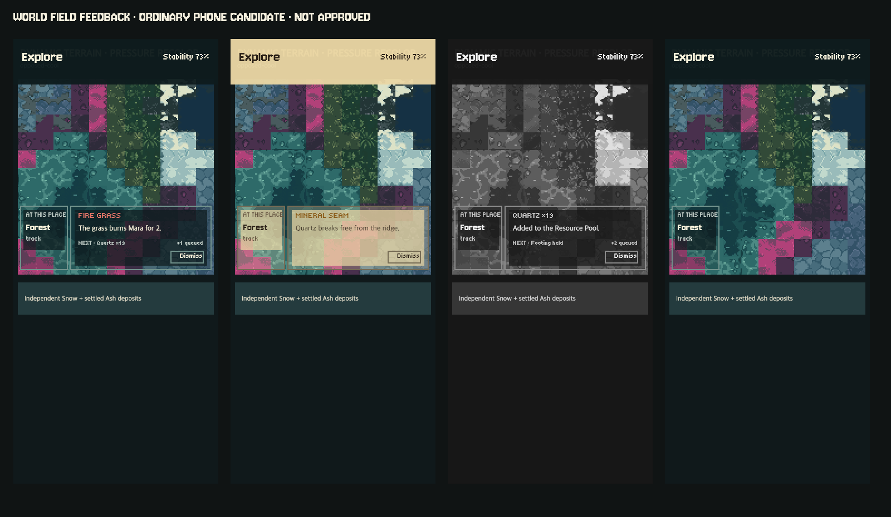
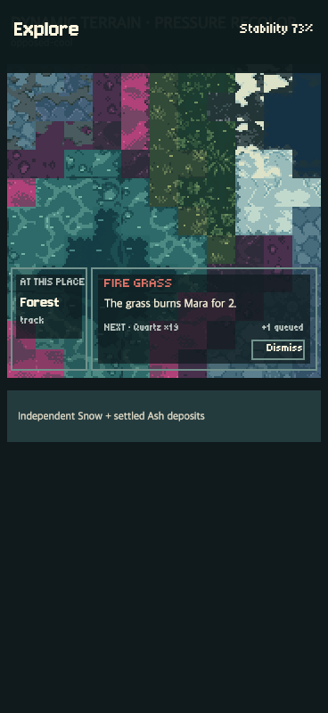
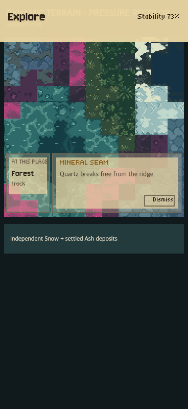
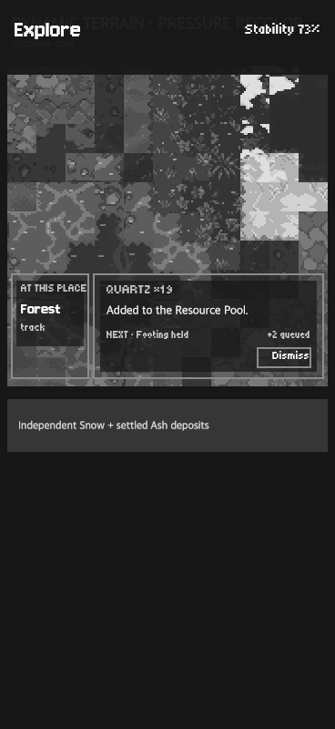

AssetLab · candidate, not approved
World field feedback · context + transient event
Ordinary 368×800 phones use a persistent 25% terrain-context pane and a transient 75% event pane over the map. Broad control responsiveness is outside this milestone.



